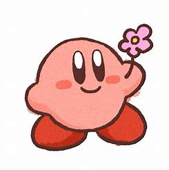

Para mi garrapata✨.
Creo que esta es tu última carta, porque yo fallezco la próxima
semana
(ntc).
Esta es tu última carta, pero siendo mi no-novia, y es por eso que he venido a
expresarte algunas cosas.
Simplemente, sí, mil veces sí, en esta vida y en otra, me
encantas.
Eres una niña increíble, brillante, muy chistosa (¡amo cuando te da el
siemple!), ¿verdad
doña "Cartera"? JAJAJA.
Nunca había sentido tanta conexión con una persona como la que tengo
contigo.
Eres mil veces mi tipo y sinceramente nunca cambiaría ese momento en el que
tuve la casualidad de
conocerte, siendo doña seca, llegando y diciendo que quieres un bolis de mimon, que si las
camas de ardillas JAJAJA,
o que mejor, haciéndome tu seña favorita en la primera cita.
De verdad, te amo.
Llegaste a romper mi estilo de vida y, repentinamente, me estás haciendo
vivir, no me quiero quemar con todo lo que me hiciste pasar y como fue mi proceso
de enamorado, solamente puedo decir que gracias por llegar a mi vida :).
Lo que me haces sentir en canciones significa:
Llegaste a mi vida para mostrarme lo que es estar enamorado, y nunca pensé que un nombre pudiera retumbar tanto en mi cabeza: mi Lizzy.
Aunque esto apenas comienza, deseo con todo que siga y siga... Y mientras yo exista, te juro que te enseñaré —y sabrás— lo que es un amor bonito. *Un amor como el que mereces*.
Lo que me haces sentir en canciones significa mucho para mí...
Y muchas más... ¡TE AMOOO MI NIÑA! 💖
Finalmente... para que ya no te pregunten tus amigos 😅 No sé en qué momento entraste en mi mente y en mi corazón, pero me encanta que estés ahí. Y me encantaría que siguieras ahí, soportando mis bromitas y mi estupidez.
Es por eso que quiero preguntarte algo, no como un juego, sino desde el corazón: ¿Te gustaría vivir todas estas anécdotas... pero de manera oficial? ❤️

Eli, ¿Quieres ser mi novia?